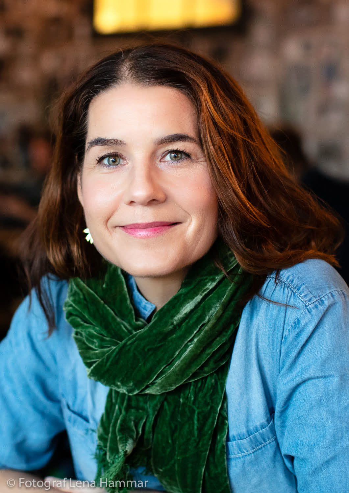
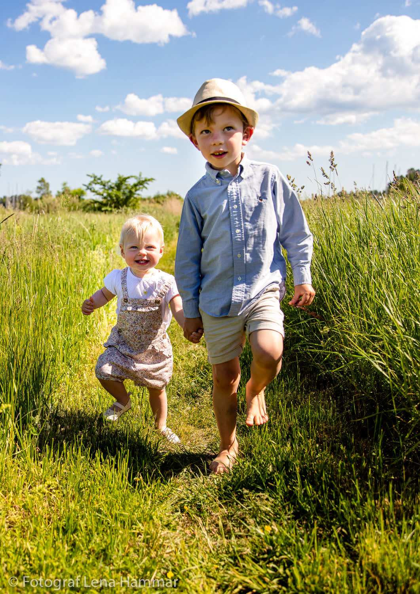
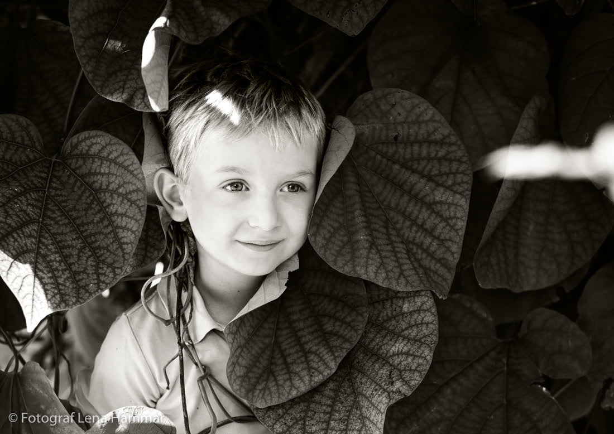
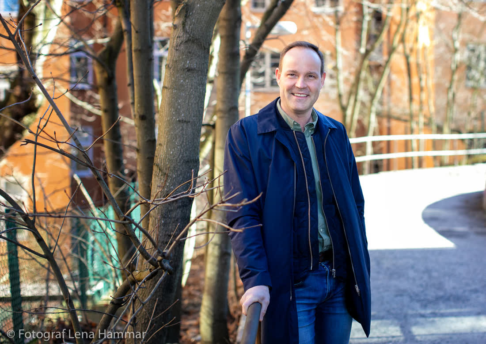

Tällberg · Juni

Maja & Johan
En regnig morgon som blev en gyllene kväll över Siljan. Långbord på ängen, nyckelharpa och dans till midnatt.
Vi är Ida och Jonas – ett fotografpar från Leksand som fotograferar naturliga, stillsamma bröllop i hela Dalarna.

Vi började fotografera bröllop tillsammans 2016, när en vän bad oss ställa upp på hennes fäbodbröllop i Orsa. Sedan dess har det blivit drygt 160 dagar – i kyrkor, lador, på bryggor och fjälltoppar.
Att vi är två gör att vi kan vara på flera ställen samtidigt utan att någonsin ta över. Vi fotograferar även familjer och mindre företag i Dalarna.
Båda fotograferna ingår alltid i Halvdag och Hela dagen. Resor inom Dalarna ingår.






Varje bröllop har sin egen ton. Här är några av dem vi fått vara med om.
En regnig morgon som blev en gyllene kväll över Siljan. Långbord på ängen, nyckelharpa och dans till midnatt.

Vigsel i kyrkan vid vattnet och fest på en gammal fäbod. Vi smet iväg i solnedgången för porträtt bland tallarna.


Ett litet bröllop med trettio gäster, gröna sammetsklänningar och middag i ett timrat loft.


Båtfärd till ceremonin, sill och snaps på bryggan och ett tal från lillasyster som ingen kommer glömma.


Midsommarkrans i maj, kyrkbåt över Orsasjön och en fest som slutade med polska i ladan.


Skicka ert datum och plats via formuläret.
Vi ringer upp och pratar igenom era tankar och önskemål.
Två veckor före går vi igenom tidsplan och viktiga personer.
Efter fem veckor levereras alla bilder i ett onlinegalleri.
”Ida och Jonas blev som en del av familjen den dagen. Bilderna fångar exakt hur det luktade av björk och regn.”
”De hittade ljus där vi bara såg grå himmel.”
”Lugna, varma och otroligt skickliga.”
Något annat ni undrar? Hör av er.
Ja! Vi har fotograferat bröllop i Idre, Sälen och Grövelsjön. Fjällvandring till ceremonin är inget problem.
Då tar vi med paraplyer. Ärligt talat blir några av de finaste bilderna i regn och dimma.
Vigselpaketet är med en fotograf. Övriga paket kan anpassas efter önskemål.
En förhandstitt inom en vecka och hela galleriet inom fem veckor.
Vi svarar på alla förfrågningar inom två vardagar.
hej@fjallgranfoto.se
072-905 14 60
Leksand, Dalarna